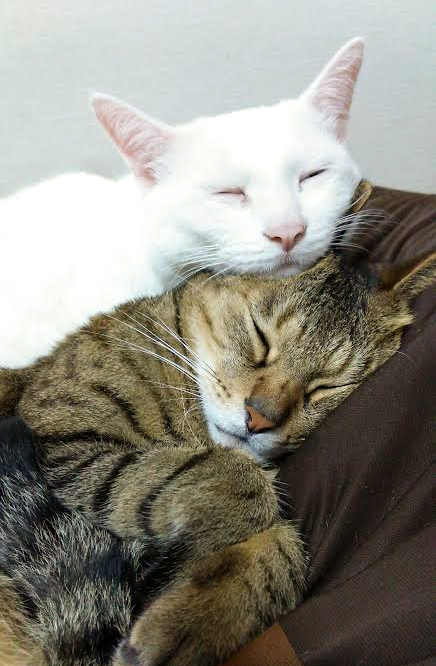

YAMALT vol.01

猫のすすめ
- 監修：嫁
- 原稿&発表：大山奥人
猫に対する世間のイメージ
- ツンデレ
- 懐かない
- 自立心が強い
- 引っ掻く
などなど、飼い主にあまり甘えてこないイメージ
でも実際は...
- 表情豊か
- お見送りお出迎えをする
- どこでも付いてくる
- 甘えてくる
- 声を使ったコミュニケーションが出来る
猫は凄い！
犬と猫、どちらが好きかを考える際に
「猫は可愛いげが無くつまらない」
と思ってしまうのは大変に勿体ない事なのです。
実際に飼ってしまえばイメージは大きく変わり、
大抵の人が猫狂いと化し
「うちの子が世界一」
と思わせる魔力を秘めています。
犬と猫のおおきな違い
しつけの必要性
猫にしつけは必要？
そもそもしつけの概念がありません
人との関係性
犬
「家来と主人」
猫
「赤ちゃんと母」
赤ちゃんへ叱る怒ると言った
しつけが出来ないことと同じように
いかに「されたくない事をさせない環境」を作れるか
猫に悪意は存在しません。
それなのに訳も理解できず
怒られたりしたら嫌ですよね？
猫とのコミュニケーションは
とにかくベタベタに可愛がる
以外、全く必要ありません。
仔猫を飼ったら困ること第１位
噛まれる事
仔猫は遊んで楽しくて噛んでくるので、悪意はない
でも噛まれたら痛いしやめて欲しい。
結論：我慢する
しかし簡単な抜け道があります。
仔猫の2匹同時飼い
- 甘噛が出来るようになる。
-
他の猫への耐性が付き
新入りを受け入れられる
結論（２）：２匹飼う
汝の猫を愛せよ
猫が人に対して怒りを表現するのは
嫌な経験があったから
犬にしつけをするように
猫にするのはすべて悪影響
聖人になって猫を愛しましょう
おわりに
